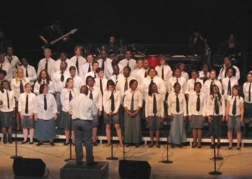

Plattsburgh State
Gospel Choir
The Plattsburgh State Gospel Choir (PSGC) was organized in 1991 by students and has constantly emphasized the breadth and depth of gospel music in order to expose both SUNY Plattsburgh and the North Country to this unique American genre. PSGC’s 1st performance in 1991 was for SUNY Plattsburgh’s Kent State/Jackson State memorial ceremony.
The choir actively performs on campus, in the community, and throughout the region averaging 25 appearances each year. The choir sings at a variety of settings including colleges, campus events, K-12 schools, churches, memorial services, weddings, and other community events. In 2014, the choir participated in its first Gospel Choir Competition held at the University of Binghamton; among numerous other competing college choirs around New York State, our choir placed second. In the past years, the choir has performed in Burlington, Albany, New York City, Boston, Washington D.C., Little Rock/Stuttgart, Chicago, Montreal, Toronto, Tokyo and St. Maarten/St. Martin.
